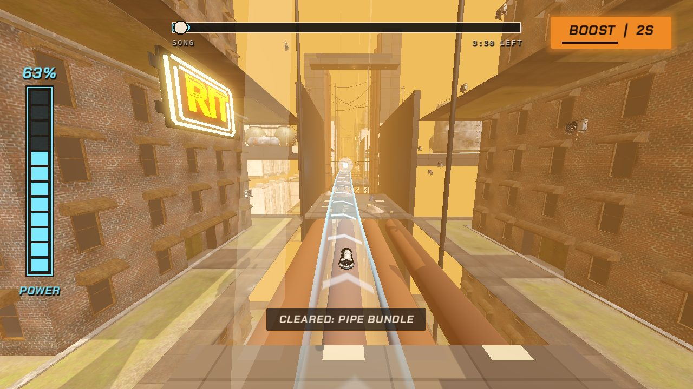
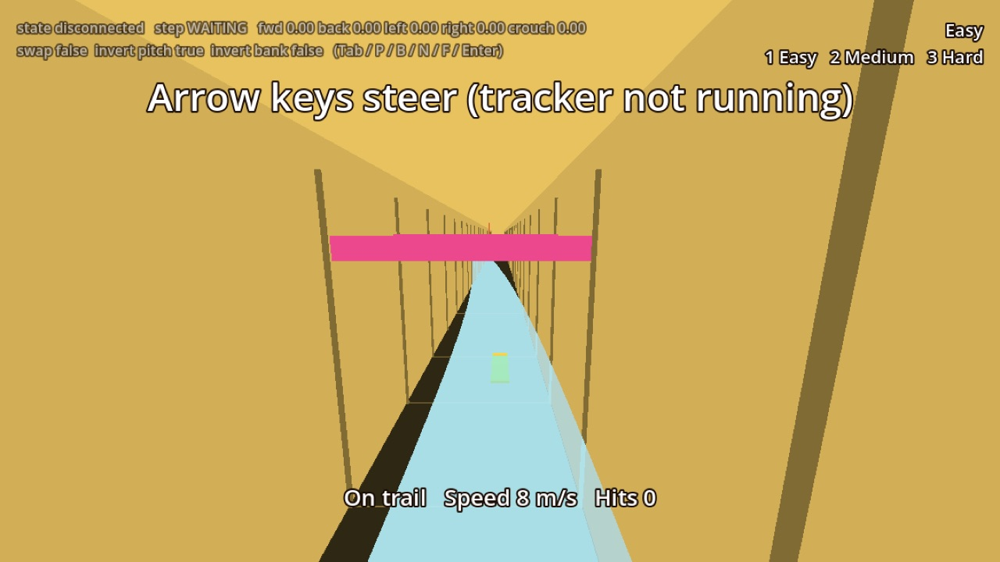
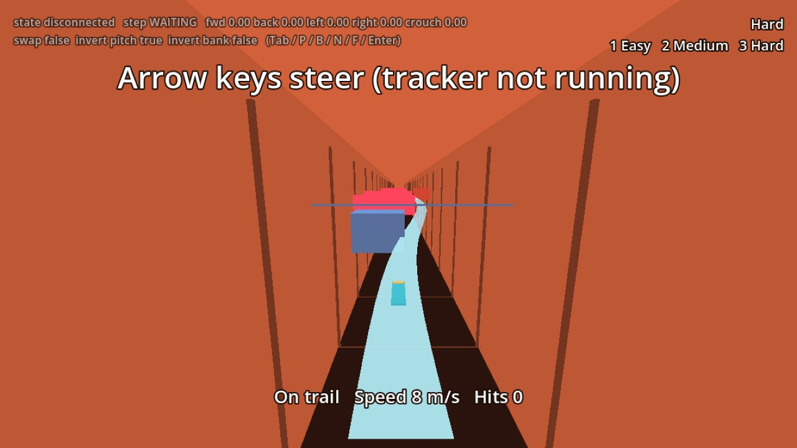
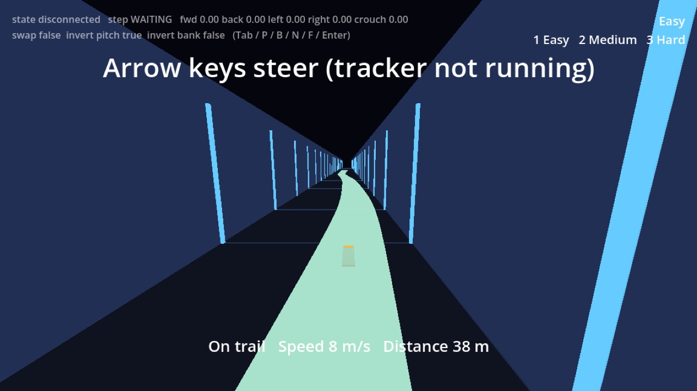
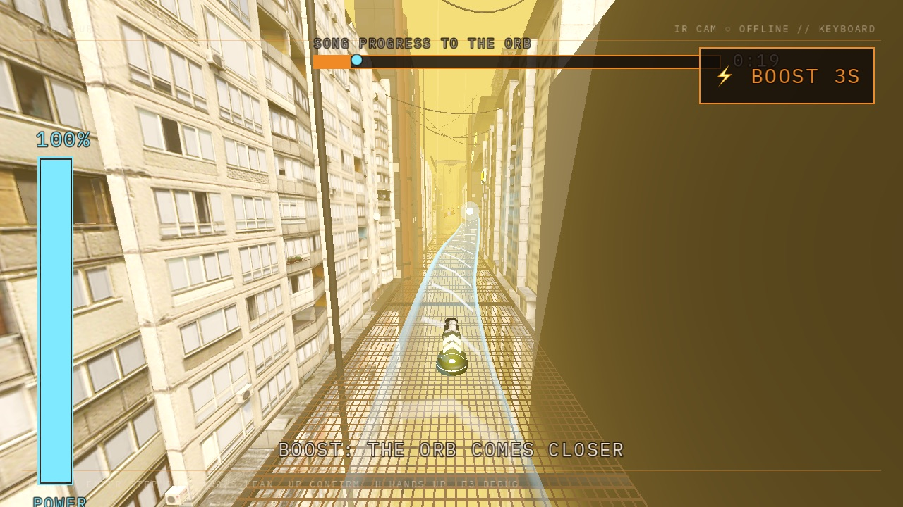
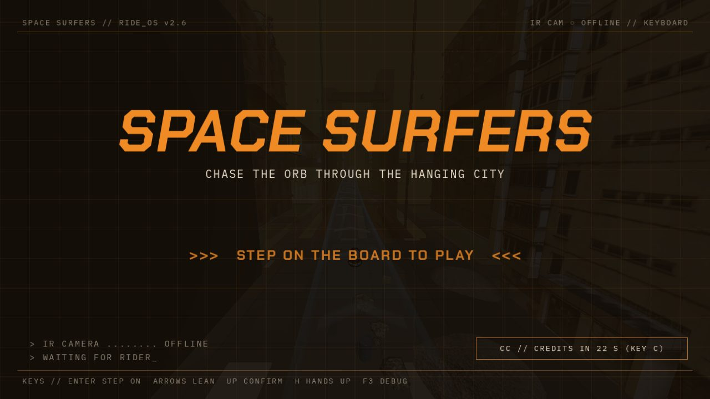

An industrial city hanging in the dark
You ride through a stacked undercity of panel blocks, pipes, catwalks and neon, lit warm orange and sunk in haze. The trail and the orb are the only cool colour, so the way forward always reads first.
No zones. The whole city shares one warm palette that leans yellow on Easy and red on Hard.
Only the trail, the orb and the boost pads are blue. Everything else is something to read past or dodge.
There is no player model. The camera's live silhouette of your body stands in for you: orange on the board in the city, blue on the calibration screens.
Hard edges, hazard stripes and monospaced readouts, in Chakra Petch and IBM Plex Mono. Only text that means something to the player.





